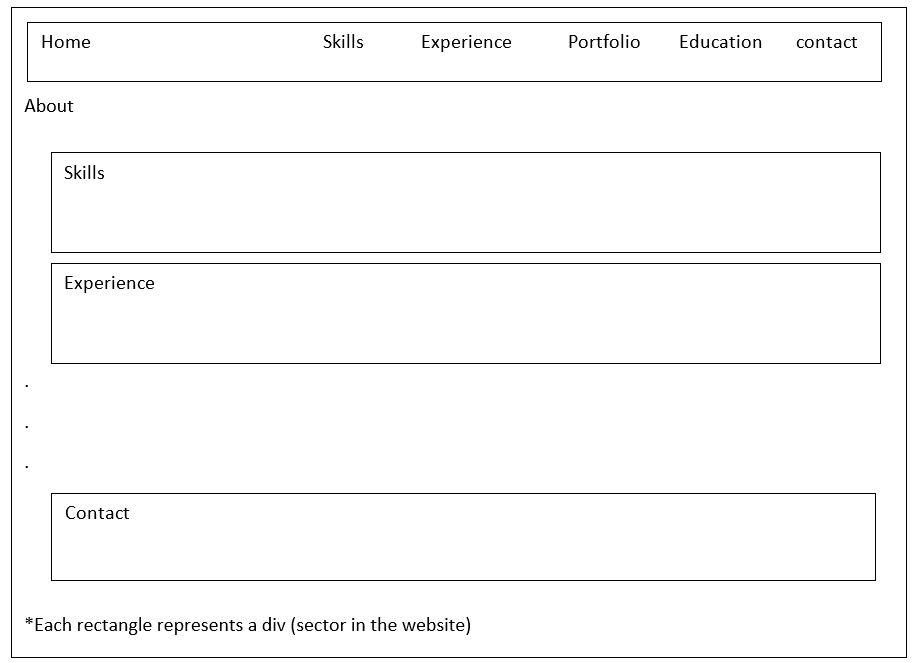
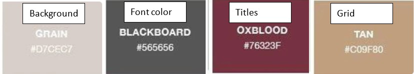

1. UX design guidance questions
- The target population of the website is in general the employers and human resources people in particular.
- The main purpose of the website is to display relevant information that will impress
- The secondary purpose of the website is to bind personal projects.
- The actions I want the user to perform are going through all parts of the site and leaving contact information
- The success index is the number of employers who left details on the website
- The content world of the site is free information about the job seeker
2. UI design guidance questions
-

-
Color scheme

- the font will be "'Montserrat', sans-serif"
- images: passport picture, skills images